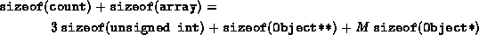
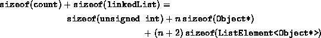

Data Structures and Algorithms
with Object-Oriented Design Patterns in C++
Data Structures and Algorithms
with Object-Oriented Design Patterns in C++
The running times calculated for the various
member functions of the two ordered list implementations,
ListAsArray and ListAsLinkedList,
are summarized below in Table  .
With the exception of two member functions,
the running times of the two implementations
are asymptotically identical.
.
With the exception of two member functions,
the running times of the two implementations
are asymptotically identical.
| ordered list implementation | |||
|
member function | ListAsArray | ListAsLinkedList | |
| Insert | O(1) | O(1) | |
| IsMember | O(n) | O(n) | |
| Find | O(n) | O(n) | |
| Withdraw(Object&) | O(n) | O(n) | |
| FindPosition | O(n) | O(n) | |
| operator[](Position&) | O(1) | O(1) | |
| operator[](unsigned int) | O(1) | | O(n) |
| Withdraw(Position&) | O(n) | O(n) | |
| InsertAfter | O(n) | | O(1) |
| InsertBefore | O(n) | O(n) | |
The two differences are the subscripting operator which takes an integer offset, operator[] (unsigned int), and the InsertAfter function. The subscripting operation can be done constant time when using an array, but it requires O(n) in a linked list. Conversely, InsertAfter requires O(n) time when using an array, but can be done in constant time in the singly-linked list.
Table does not tell the whole story.
The other important difference between the two implementations
is the amount of space required.
Consider first the array implementation, ListAsArray.
An array object is comprised of two member variables--array and count.
The former has type Array<Object*> and the latter is an
unsigned int.
The storage required for an Array<T>
was computed in Chapter .
Using that result, the storage needed for an ListAsArray
which can hold at most M object pointers is given by:

Notice that since we have implemented the ordered list container using indirect storage, we have calculated the space used by the pointers to the contained objects. However, since we cannot know the types of the contained objects, we cannot calculate the space required by those objects.
A similar calculation can also be done for the ListAsLinkedList class. In this case, we assume that the actual number of contained objects is n. The total storage required is given by:

If we assume that integers and pointers require four bytes each, the storage requirement for the ListAsArray class becomes 16+4M bytes; and for the ListAsList class, 12+8n bytes. I.e., the storage needed for the array implementation is O(M), where M is the maximum length of the ordered list; whereas, the storage needed for the linked list implementation is O(n), where n is the actual number of items in the ordered list. Equating the two expressions, we get that the break-even point occurs at n=(M+1)/2. I.e., if n<(M+1)/2, the array version uses more memory space; and for n>(M+1)/2, the linked list version uses more memory space.
It is not just the amount of memory space used that should be considered when choosing an ordered list implementation. We must also consider the implications of the existence of the limit M. The array implementation requires a priori knowledge about the maximum number of items to be put in the ordered list. The total amount of storage then remains constant during the course of execution. On the other hand, the linked list version has no pre-determined maximum length. It is only constrained by the total amount of memory available to the program. Furthermore, the amount of memory used by the linked list version varies during the course of execution. We do not have to commit a large chunk of memory for the duration of the program.
 Copyright © 1997 by Bruno R. Preiss, P.Eng. All rights reserved.
Copyright © 1997 by Bruno R. Preiss, P.Eng. All rights reserved.